Introduction to fastCNV
fastCNV.RmdContext
fastCNV is a package to detect the putative Copy Number
Variations (CNVs) in single cell (scRNAseq) data or Spatial
Transcriptomics (ST) data. It also plots the computed CNVs.
In this vignette you will learn how to run this package on single scRNAseq or ST Seurat objects and on a list of Seurat objects.
Load packages
To get the example data used in this vignette, you’ll need to install
and load the fastCNVdata package.
remotes::install_github("must-bioinfo/fastCNV")
remotes::install_github("must-bioinfo/fastCNVdata")Load the example data
fastCNV package works both on scRNAseq data or ST data,
and we will demonstrate both cases here.
Here, we load scColon (scRNAseq data from a colorectal tumor) and crcsample1, crcsample2, crcsample3 and crcsample4 (spatial transcriptomics data from colorectal tumors).
Check annotation
You can load a separate annotation file for your dataset if this
information is not available in the Seurat object. In this example, cell
type annotations are already present under the column
"annot" of the metadata.
# Import the annotation file corresponding to your sample. For 10X ST data you can annotate your spots with LoupeBrowser
annotation_file <- read.csv("/path/to/your/annotations/for/crcsample1.csv")
crcsample[["annot"]] <- annotation_file$Annot
unique(scColon[["annot"]])
#> annot
#> C113_N_1_1_0_c1_v2_id-AAACCTGTCAGTGTTG normal
#> C113_N_1_1_0_c1_v2_id-AAAGCAACACCCTATC Fibro
#> C113_N_1_1_0_c1_v2_id-AAATGCCGTCACTTCC NK
#> C113_N_1_1_0_c1_v2_id-AACGTTGAGAGGGATA PlasmaCells
#> C113_N_1_1_0_c1_v2_id-AACTCTTGTCTCACCT MyeloLineage
#> C113_N_1_1_0_c1_v2_id-ACCCACTTCGAATGCT Tcells
#> C113_N_1_1_0_c1_v2_id-ACTGCTCAGACACTAA Bcells
#> C113_N_1_1_0_c1_v2_id-CGGAGTCTCACCAGGC SmoothMuscle
#> C113_N_1_1_0_c1_v2_id-CGGGTCATCTACCAGA Mastocytes
#> C113_N_1_1_0_c1_v2_id-GTTAAGCTCACAGTAC EndoArteriel
#> C113_T_1_1_0_c1_v2_id-AAACCTGAGATCGATA EpiT
#> C113_T_1_1_0_c1_v2_id-ATCATGGGTCGTCTTC DC6.pDC
#> C113_T_1_1_0_c1_v2_id-CGATTGATCTGCGACG Pericytes
#> C113_T_1_1_1_c1_v2_id-AGCGGTCAGGCTCAGA Schwann.Entericglial
unique(crcsample1[["annot"]])
#> annot
#> AAACAAGTATCTCCCA-1 epithelium&submucosa
#> AAACACCAATAACTGC-1 exclude
#> AAACATTTCCCGGATT-1 submucosa
#> AAACCCGAACGAAATC-1 tumor
#> AAACCTAAGCAGCCGG-1 tumor&stroma_IC med to high
#> AAAGGCTACGGACCAT-1 stroma_fibroblastic_IC high
#> AAAGTTGACTCCCGTA-1 non neo epithelium
#> AAATAGGGTGCTATTG-1 IC aggregate_submucosa
unique(crcsample2[["annot"]])
#> annot
#> AAACAAGTATCTCCCA-1 tumor&stroma_IC med to high
#> AAACAGCTTTCAGAAG-1 tumor
#> AAACAGGGTCTATATT-1 stroma_fibroblastic_IC high
#> AAACCGTTCGTCCAGG-1 stroma_fibroblastic_IC med
unique(crcsample3[["annot"]])
#> annot
#> AAACAGAGCGACTCCT-1 lamina propria
#> AAACCGGGTAGGTACC-1 connective tissue_3_fibroblastic_IC med
#> AAACCGTTCGTCCAGG-1 connective tissue_2_fibroblastic_IC low
#> AAACCTCATGAAGTTG-1 connective tissue_6_hemosiderin?
#> AAACGAGACGGTTGAT-1 IC aggregate_submucosa
#> AAACTGCTGGCTCCAA-1 connective tissue_1_edema
#> AAATAACCATACGGGA-1 epithelium&lam propria
#> AAATAGGGTGCTATTG-1 squamous epithelium
#> AAATGGCATGTCTTGT-1 exclude
#> AACCTTTACGACGTCT-1 non neo epithelium
#> AACGTGCGAAAGTCTC-1 connective tissue_4_muscularis_IC low
#> ACAAGGGCAGGCTCTG-1 glandular tissue
#> ACGTTAGATTTGCCCG-1 IC aggregate connective tissue
unique(crcsample4[["annot"]])
#> annot
#> AAACAATCTACTAGCA-1 stroma_fibroblastic_IC high
#> AAACAGAGCGACTCCT-1 tumor&stroma_IC med to high
#> AAACGAAGAACATACC-1 tumor
#> AAAGGGCAGCTTGAAT-1 stroma desmoplastic_IC low
#> AAAGTGTGATTTATCT-1 submucosa
#> AAAGTTGACTCCCGTA-1 non neo epithelium
#> AAATACCTATAAGCAT-1 muscularis_IC med to high
#> AAATGTGGGTGCTCCT-1 stroma_fibroblastic_IC med
#> AACAATTACTCTACGC-1 exclude
#> AACTCTCAATAGAGCG-1 epithelium&submucosa
#> AAGACTAACCCGTTGT-1 stroma desmoplastic_IC med to high
#> AAGCTAGATCGAGTAA-1 IC aggregate_submucosa
#> ACCGATGGTAGCATCG-1 IC aggregate_stroma or muscularisRun fastCNV
During this step, fastCNV() will use:
prepareCountsForCNVAnalysis: runs the Seurat standard clustering algorithm and then aggregates the observations (cells or spots) to into metaspots with up to the number of counts defined byaggregFactor(default 30,000). In addition, the observations can be aggregated on their seurat cluster AND their cell type combined by leaving defaultaggregateByVar = TRUEand specifying parameterreferenceVar. If the Seurat object has previously been clustered, the clustering will be re-done on sctransformed (SCT) data using 10 PCs with default parameters toFindNeighborsandFindClusters. This can be skipped by settingreClusterSeurat = FALSE.CNVanalysis: computes the CNV. If you have annotations for your Seurat object, you can add the parametersreferenceVarandreferenceLabeltoCNVcalling, as we are doing for thecrcsample1example. If given a list of Seurat objects, it will also output a PDF file containing the CNV heatmaps per category accross samples. You can turn this off by settingdoRecapPlot=FALSE.plotCNVResults: to visualize the results (stored in the assays slot of the Seurat data). By default, the parameterdownsizePlotis set toFALSE, which builds a detailed plot, but takes an important time to render. If desired, you can set the parameter toTRUE, which decreases the rendering time by plotting the results at the meta-cell level instead of the cell-level, thus decreasing the definition of the CNV results plotted.
This function will also build a PDF file for each sample containing their corresponding CNV heatmap in the current working directory, which can be changed using thesavePathparameter.CNVfractionPerChromosome: to compute the CNV fraction per chromosome arm. This part offastCNV()can be skipped by turninggetCNVFractionPerChromosometoFALSE.
We are first going to run fastCNV() on our scColon
object, taking as reference the cells labeled as Bcells,
DC6.pDC,EndoArteriel, Fibro,
Mastocytes, MyeloLineage, NK,
Pericytes, PlasmaCells,
Schwann.Entericglial, SmoothMuscle and
Tcells.
scColon <- fastCNV(seuratObj = scColon, sampleName = "scColon", referenceVar =
"annot", referenceLabel = c("Bcells", "DC6.pDC", "EndoArteriel",
"Fibro", "Mastocytes", "MyeloLineage", "NK", "Pericytes",
"PlasmaCells", "Schwann.Entericglial", "SmoothMuscle","Tcells"))
#> [1] "Aggregating counts matrix."
#> [1] "Running Seurat SCTransform and clustering. This could take some time."
#> [1] "Sample : scColon"
#> Modularity Optimizer version 1.3.0 by Ludo Waltman and Nees Jan van Eck
#>
#> Number of nodes: 2840
#> Number of edges: 83853
#>
#> Running Louvain algorithm...
#> Maximum modularity in 10 random starts: 0.8916
#> Number of communities: 15
#> Elapsed time: 0 seconds
#> [1] "Seurat SCTransform and clustering done for sample scColon."
#> [1] "Running CNVAnalysis"
#> [1] "CNVAnalysis done!"
#> [1] "Plotting CNV results. This step may take some time."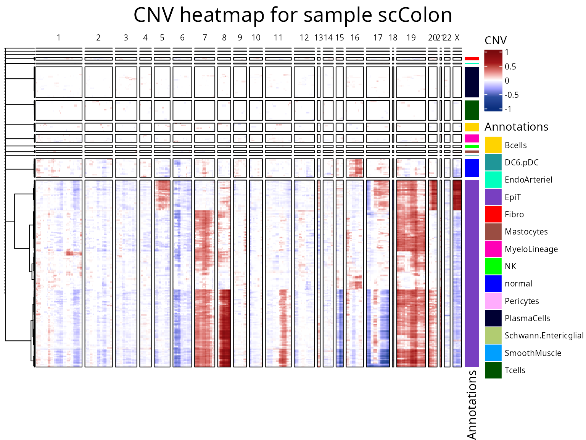
We now run fastCNV()on the crcsample1 object We decide
to take epithelium&submucosa, submucosa
and non neo epithelium as reference since these are
non-tumor spots.
crcsample1 <- fastCNV(crcsample1, sampleName = "crcsample1", referenceVar = "annot",
referenceLabel = c("epithelium&submucosa","submucosa","non neo epithelium"))
#> [1] "Aggregating counts matrix."
#> [1] "Running Seurat SCTransform and clustering. This could take some time."
#> [1] "Sample : crcsample1"
#> Modularity Optimizer version 1.3.0 by Ludo Waltman and Nees Jan van Eck
#>
#> Number of nodes: 2203
#> Number of edges: 65483
#>
#> Running Louvain algorithm...
#> Maximum modularity in 10 random starts: 0.8181
#> Number of communities: 10
#> Elapsed time: 0 seconds
#> [1] "Seurat SCTransform and clustering done for sample crcsample1."
#> [1] "Running CNVAnalysis"
#> [1] "CNVAnalysis done!"
#> [1] "Plotting CNV results. This step may take some time."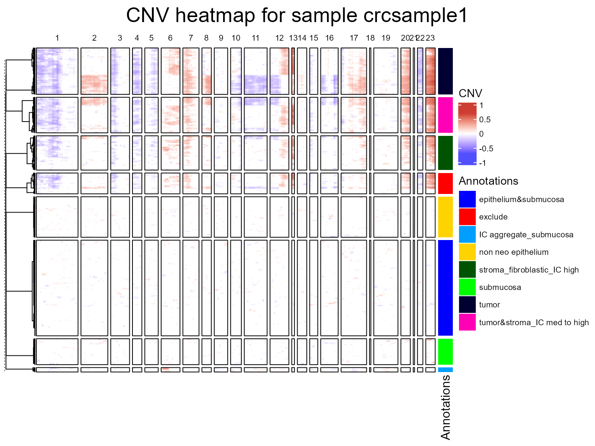
Last, we are going to run the fastCNV() function on a
list of Seurat objects. This time, an additional recap plot will be
output in a PDF file, containing the CNV heatmaps per category across
samples, since there is more than one Seurat object/sample, but you can
turn this off by setting doRecapPlot = FALSE.
seuratList <- c(crcsample2,crcsample3,crcsample4)
sampleNames <- c("crcsample2", "crcsample3", "crcsample4")
names(seuratList) <- sampleNames
referencelabels <- c("epithelium&submucosa","submucosa","non neo epithelium",
"squamous epithelium", "epithelium&lam propria", "lamina propria")
seuratList <- fastCNV(seuratList, sampleNames, referenceVar = "annot",
referenceLabel = referencelabels)
#> [1] "Aggregating counts matrix."
#> [1] "Running Seurat SCTransform and clustering. This could take some time."
#> [1] "Sample : crcsample2"
#> Modularity Optimizer version 1.3.0 by Ludo Waltman and Nees Jan van Eck
#>
#> Number of nodes: 2317
#> Number of edges: 69983
#>
#> Running Louvain algorithm...
#> Maximum modularity in 10 random starts: 0.8131
#> Number of communities: 15
#> Elapsed time: 0 seconds
#> [1] "Seurat SCTransform and clustering done for sample crcsample2."
#> [1] "Running Seurat SCTransform and clustering. This could take some time."
#> [1] "Sample : crcsample3"
#> Modularity Optimizer version 1.3.0 by Ludo Waltman and Nees Jan van Eck
#>
#> Number of nodes: 1656
#> Number of edges: 46705
#>
#> Running Louvain algorithm...
#> Maximum modularity in 10 random starts: 0.8145
#> Number of communities: 12
#> Elapsed time: 0 seconds
#> [1] "Seurat SCTransform and clustering done for sample crcsample3."
#> [1] "Running Seurat SCTransform and clustering. This could take some time."
#> [1] "Sample : crcsample4"
#> Modularity Optimizer version 1.3.0 by Ludo Waltman and Nees Jan van Eck
#>
#> Number of nodes: 1691
#> Number of edges: 48501
#>
#> Running Louvain algorithm...
#> Maximum modularity in 10 random starts: 0.8099
#> Number of communities: 9
#> Elapsed time: 0 seconds
#> [1] "Seurat SCTransform and clustering done for sample crcsample4."
#> [1] "Running CNVAnalysis"
#> [1] "Plotting the CNV recap heatmap per category accross samples. This could take some time."
#> [1] "CNVAnalysis done!"
#> [1] "Plotting CNV results. This step may take some time." 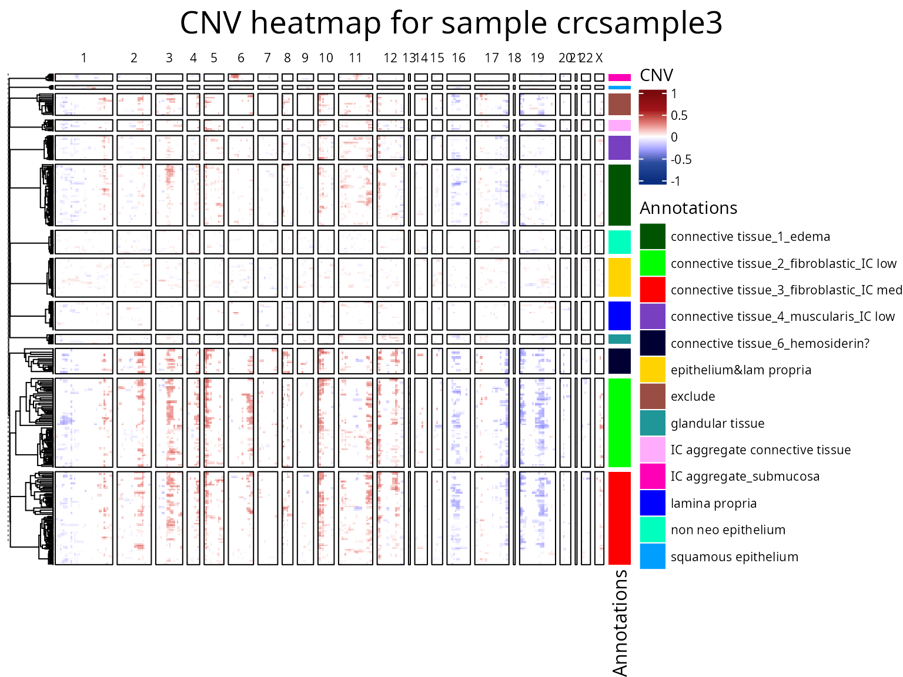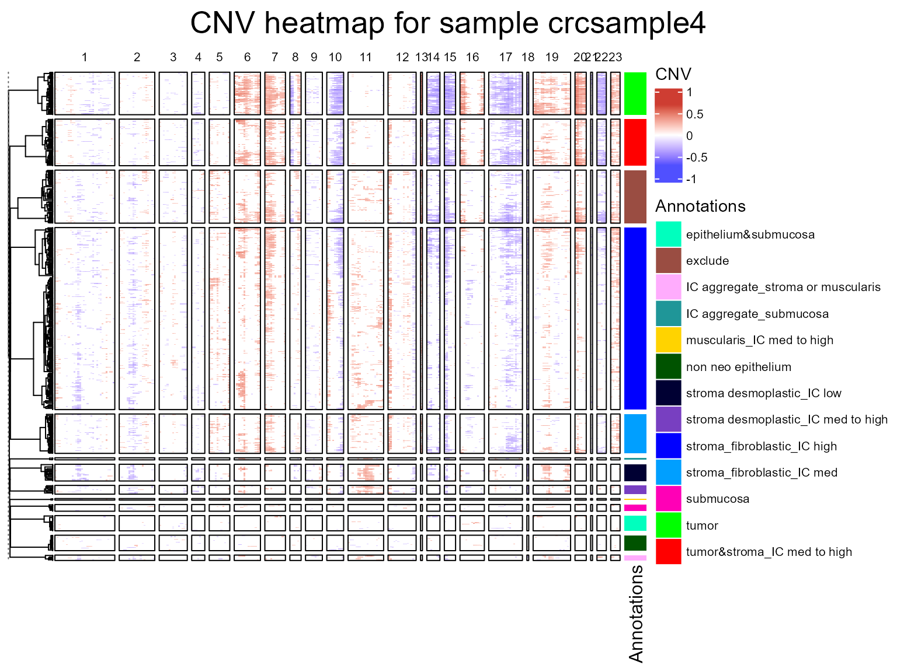
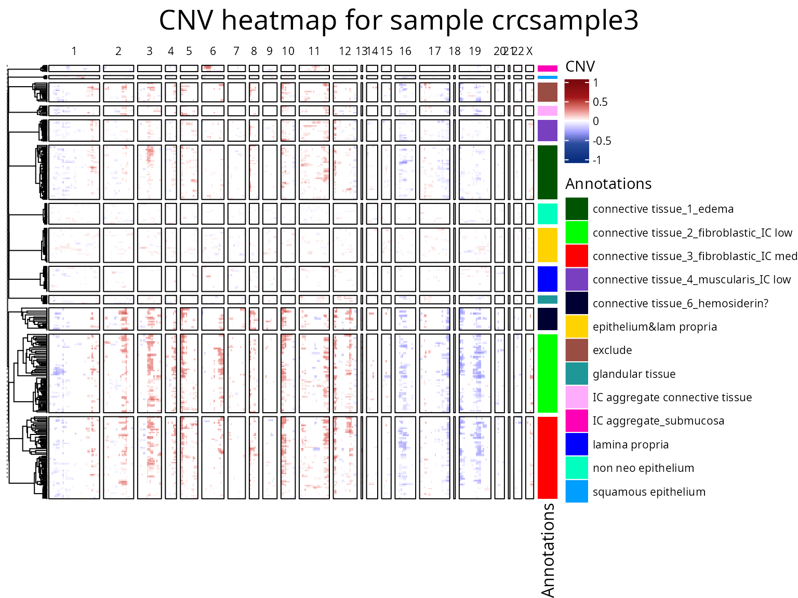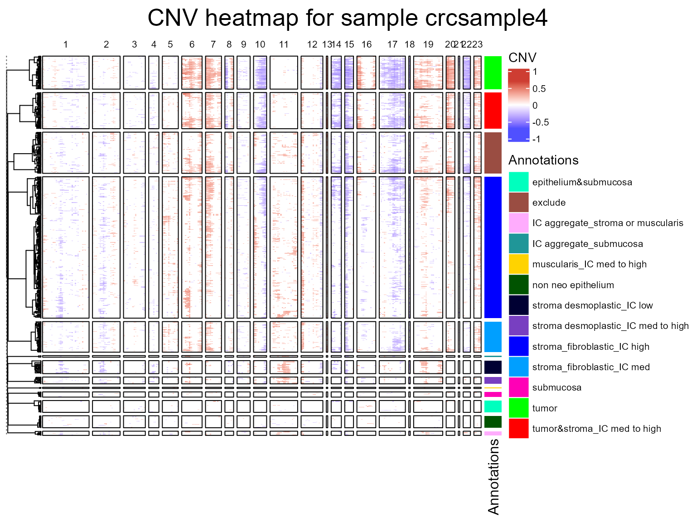
CNV fraction
fastCNV also computes a cnv_fraction for each
observation in the Seurat object. This can be directly plotted using
Seurat plotting functions, as we’ll demonstrate:
FeaturePlot(scColon, features = "cnv_fraction", reduction = "umap", ) |
DimPlot(scColon, reduction = "umap", group.by = "annot")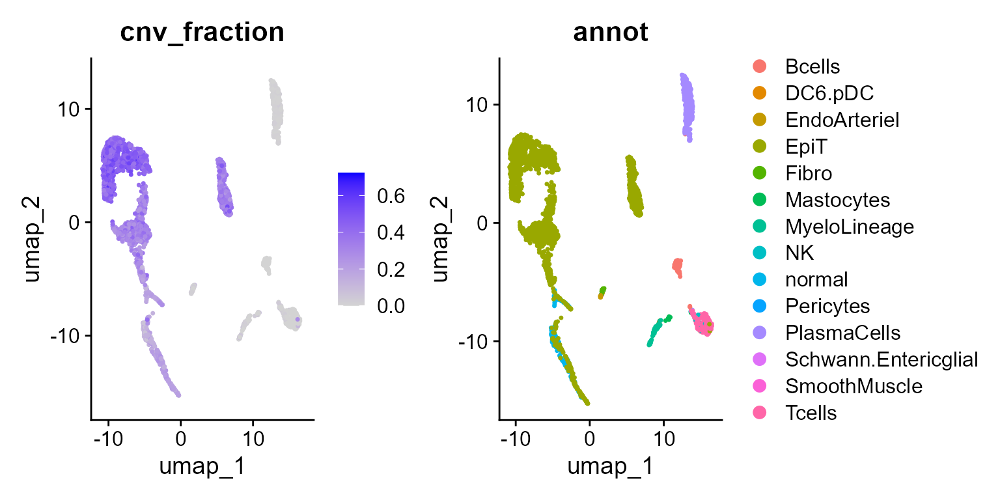
Here, we see some clusters with much higher CNV fractions than others. We can directly plot and test this:
library(ggplot2)
ggplot(FetchData(scColon, vars = c("annot", "cnv_fraction")),
aes(annot, cnv_fraction, fill = annot)) +
geom_boxplot() +
theme(axis.text.x = element_text(angle = 45, vjust = 1, hjust = 1, color = "black"))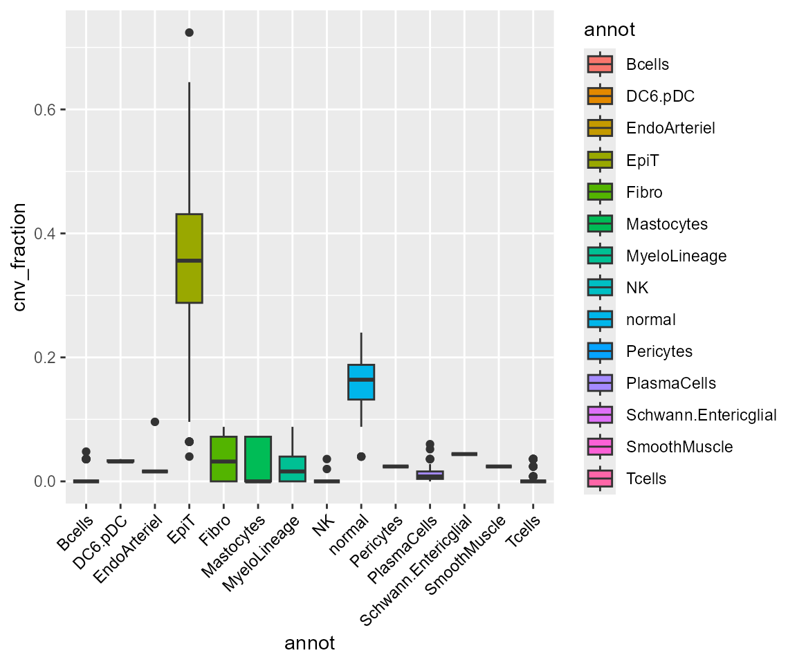
Of course, we can also plot cnv_fraction with the
Spatial plotting functions from Seurat, where we can see the non-tumor
areas well delimited:
library(patchwork)
SpatialFeaturePlot(crcsample1, "cnv_fraction", pt.size.factor = 45) | SpatialPlot(crcsample1, group.by = "annot", pt.size.factor = 45)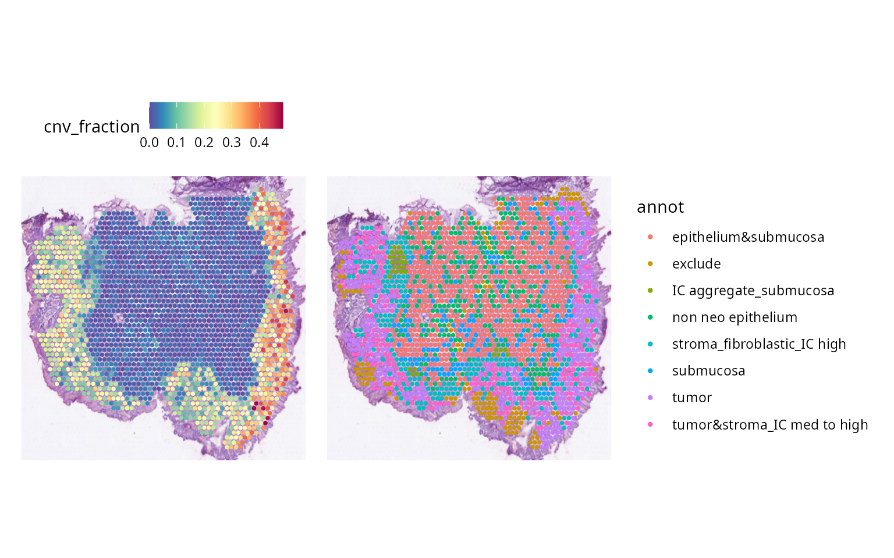
We can also plot the CNV per chromosome arm with the plotting functions from Seurat.
library(scales)
SpatialFeaturePlot(crcsample1, features = "11q_CNV", pt.size.factor = 45) +
scale_fill_distiller(palette = "RdBu", direction = -1, limits = c(-1, 1),
rescaler = function(x, to = c(0, 1), from = NULL) {
rescale_mid(x, to = to, mid = 0)
}) |
SpatialFeaturePlot(crcsample1, features = "6q_CNV", pt.size.factor = 45) +
scale_fill_distiller(palette = "RdBu", direction = -1, limits = c(-1, 1),
rescaler = function(x, to = c(0, 1), from = NULL) {
rescale_mid(x, to = to, mid = 0)
})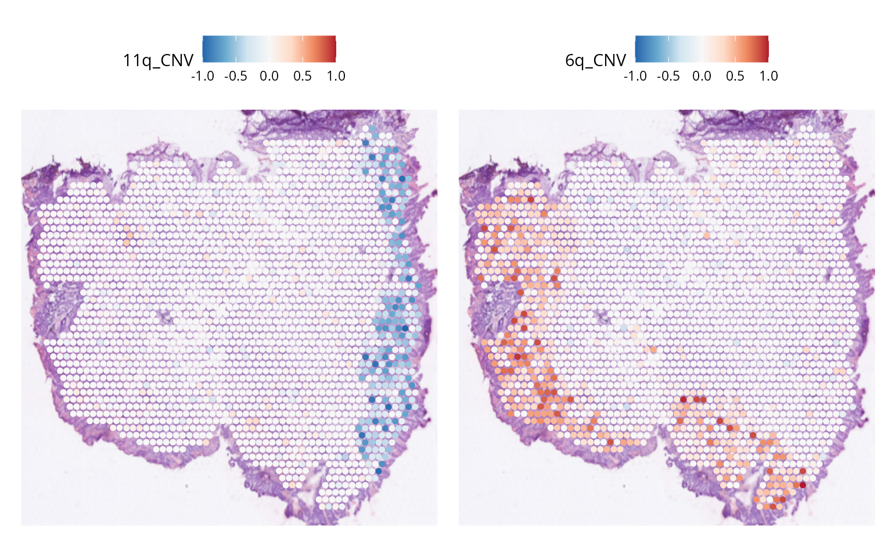
Here we see for example that the right part of the tumor have a CNV loss in the chromosome 11q, while the lower and left part of the tumor do not. Meanwhile, the opposite happens for chromosome 6q, having a gain on the lower and left part of the tumor.
CNV classification
Using the CNV per chromosome arm and CNVclassify() we
can get the alterations per chromosome arm (gain, loss or none).
CNVclassify() takes as arguments a Seurat object containing
in the metadata the CNV per chromosome arm. It calculates 3 peaks of the
CNV, corresponding to a loss, a gain and no alteration. Using these 3
peaks, it builds a table for each cell/spot and each chromosome arm
containing either “loss”, “gain” or “no_alteration”.
crcsample1 <- CNVclassification(crcsample1, tumorLabels = c("tumor", "tumor&stroma_IC med to high"))
SpatialDimPlot(crcsample1, group.by = "11p_CNV_classification") +
scale_fill_manual(values = c(gain = "red", no_alteration = "grey", loss = "blue"))| SpatialDimPlot(crcsample1, group.by = "13q_CNV_classification") +
scale_fill_manual(values = c(gain = "red", no_alteration = "grey", loss = "blue"))
CNV clusters
In addition to the CNV fraction, we can obtain clusters based on the
CNV matrix by running CNVcluster(). This runs standard
Seurat clustering pipeline on the CNV scores per observation – uses the
first 10 PCs to building the neighborhood graph and then Louvain
clustering to find the clusters.
scColon <- CNVcluster(scColon, resolution = 0.8)
crcsample1 <- CNVcluster(crcsample1, resolution = 0.8)Results of CNVcluster are saved in the Seurat object
under the "cnv_clusters" metadata variable, which can be
plotted with Seurat functions. We will demonstrate on a ST object, but
it also works with regular scRNAseq data.
SpatialDimPlot(crcsample1, group.by = "cnv_clusters", pt.size.factor = 45)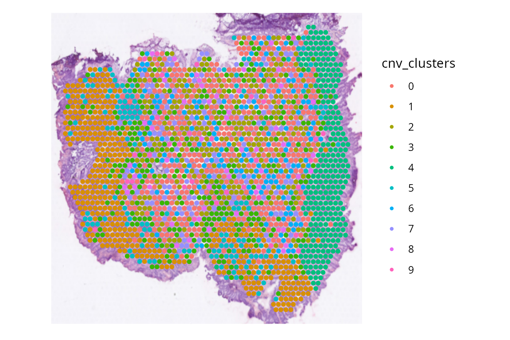
And we can retrieve this metadata and plot it directly. Here, we
relate the cnv_clusters with our annotation variable
annot.
library(ggplot2)
library(SeuratObject)
ggplot(FetchData(crcsample1, vars = c("cnv_clusters", "annot")), aes(annot, fill = cnv_clusters)) +
geom_bar(position = "fill") +
theme(axis.text.x = element_text(angle = 45, vjust = 1, hjust = 1, color = "black"))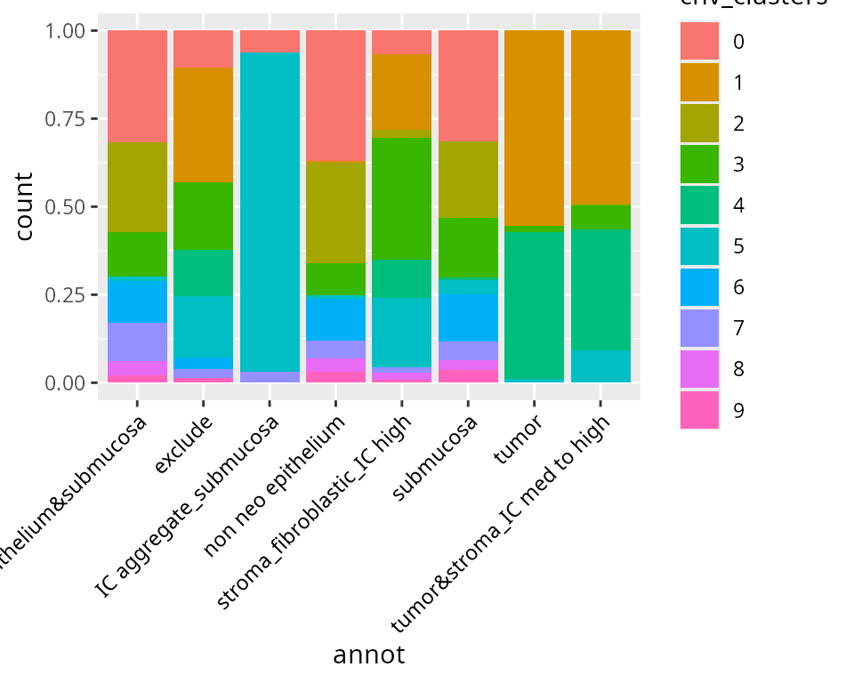
We find that tumor tissue are virtually always cnv_cluster 1, 2 or 3 ; meanwhile, normal labels tend to be cnv_cluster 0, 4, 5, 6 or 7 which present very few or no CNV.
Note that we can also use cnv_clusters to label the CNV heatmap,
directly using the parameter splitPlotOfVar of the
plotCNVResults() function.
plotCNVResults(scColon, referenceVar = "annot", splitPlotOnVar = "cnv_clusters")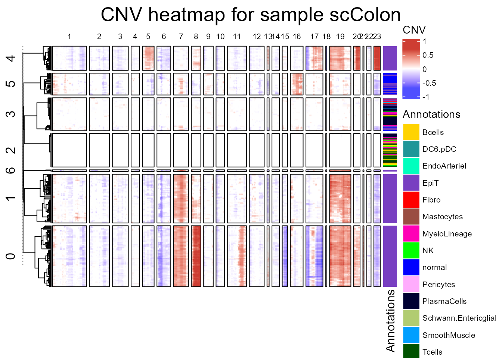
plotCNVResults(crcsample1, referenceVar = "annot", splitPlotOnVar = "cnv_clusters")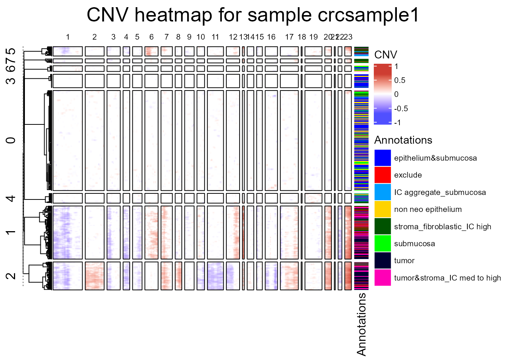